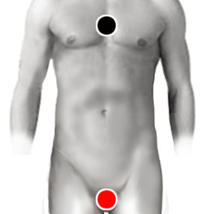

Disfunción erectil
Par
timo - pene
cuerpo cavernoso - cuerpo cavernoso*
hiato esofágico - testículo

* Nota: Puede responder como pene - pene
Generalidades:
Producción de esperma: El par especial hiato esofágico - testículo ayuda a mejorar la producción de esperma.
Disfunción Erectil: La incapacidad de mantener una erección el tiempo necesario para llevar a cabo el acto sexual en forma satisfactoria; o bien, una erección poco firme. Puede deberse a causas psicológicas, a causas físicas, o una combinación de ambas. En cuanto a las causas físicas es importante el correcto funcionamiento del sistema nervioso, así como la correcta irrigación sanguinea. Los principales pares de patógenos asociados con este padecimiento son: testículo-testículo, ascendente-riñón y pudendo-pudendo.
También pueden ser de utilidad los pares especiales como atlas-atlas, esternón -suprarrenales, próstata- próstata y pineal - próstata